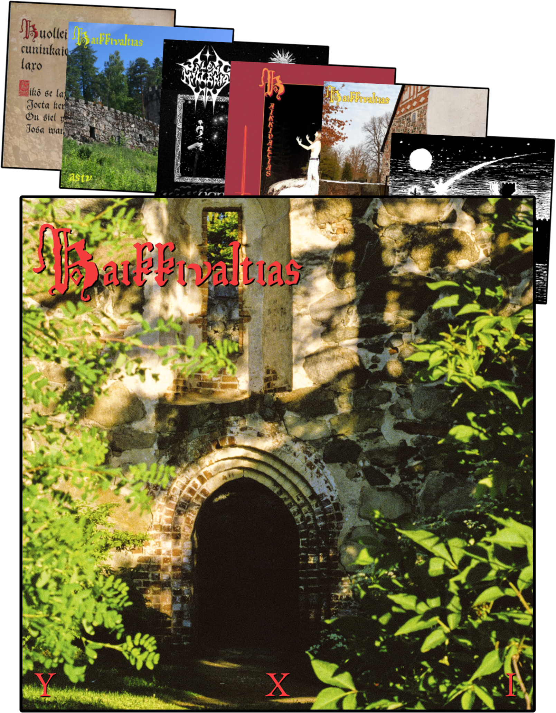

Y X I
this album is Lush. it is Grandiose and Vibrant.
this album is all about Passion.
It explores passion in many different forms, like passion for this world that is burning to ash as we speak.
Passion in human connection: conversation, friendship, romance.
Passion in peace, freedom and respect for one another. For Standing up and fighting for what is right.
Passion for old stories and ancient legends, what we can learn from them even in this day and age.
Passion for spirituality, the longing for a higher power and divine experiences.
And ultimately passion for beauty and art, how art elevates life and makes it beautiful. How art deals with different topics of our lives and sparks discussion. How art is not luxury or elitist. How art should be accessible to everyone.
The introduction of this album: YXI eli ensimmäinen lucu Kaikkivaltiaan historiasa translates to ONE or the first chapter in the history of Kaikkivaltias.
All the earlier releases were a prologue. The earliest riffs on this album were written in 2022. Each release has influenced this record. Everyone of them is a building block for this album.
YXI is the first chapter because it is the first fully realized version of Kaikkivaltias.
Enter the world of Kaikkivaltias. A vibrant, lush finnish summer set in a romantic time long gone.
Listen to YXI - and enter the world of Kaikkivaltias.
-Magus Olaus
MMXXVI
